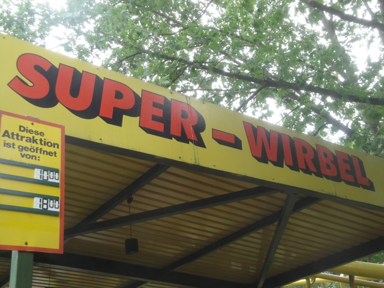

| |

Super Wirbel Review

For todays review, we're going to travel back in time to review Super Wirbel. The Vekoma Corkscrew that Holiday Park used to have. So we pull down the OTSRs and away we go. The lifthill is quite slow, so it takes a little while to get to the top. Once you reach the top, you dip and go through the turn, and then, you go through the drop. The drop is not much, but it's fun. You get a small little pop of airtime there. You then rise up through another hill. Not much, but still fun. Then you start to go through a banked turn. This then leads us through the corkscrews. The corkscrews are fun, and a little disorienting, but they're still just corkscrews. Now with an Arrow Corkscrew, you'd be heading into the brake run right now, but Vekoma still has some tricks up it's sleeve. You then go up a curved hill. Now on most Vekoma Corkscrews, this caused us to lose all our speed, but we still have some here cause this was one of the faster Vekoma Corkscrews. We then cruise through some straight track. It's all calm, then we head down a small drop. This gives us a nice little pop of airtime, which is fun. We then head into another curve turn, except this time, we go through some strange turnaround type of element. The turnaround leads us past some straight track by the corkscrews. After a big cruiser turn, we glide straight into the brake run. I don't know where the painful ride rumor came in because Vekoma Corkscrews are fun and not painful. And this was definetly the best Vekoma Corkscrew that I'd ridden. It's gone now, which is kind of a bummer, but after riding a clone of Sky Scream, I can safely say that that's a much better ride and is totally worth riding, even if I did enjoy Super Wirbel.
6/10
Location: Holiday Park
Opened: 1979
Closed: October 31, 2013
Built by: Vekoma
Last Ridden: June 24, 2012
I have ridden this exact same ride at the following parks.
La Ronde
PNE Playland
Super Wirbel Photos


Home
|